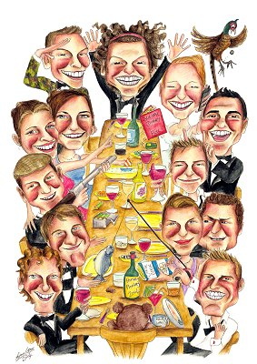

For several years now, the Nordic Conference on Partitions and
Combinatorics, NCPC, has had a growing number of participants. This
year the organizing team is expecting an all time high record in the
hundreds. Due to the politics of arranging this prestigious event, the
conference site was decided a long time ago to be the Grand Hôtel in
Stockholm. The hotel has two large dining halls, but unfortunately,
each of these halls alone can only fit up to two thirds of the NCPC
participants, so the participants are going to have to be divided in
two groups.
This constraint calls for some thinking on behalf of the organizing
team for the conference dinner: could they come up with some division
of the participants in two parts, none of which is larger than 2/3
of the entire group, meeting some witty division rule suitable for the
occasion, which they could tell the participants for their amusement?
After all, as long as there is some grand logic rule to which of the
two dining halls you are being seated in, you (as a mathematician)
would be happy! They thought for a while and came up with the
following idea for the division: Is there a year Y
and a division of
the participants in two parts such that every pair in the first part
met for the first time some time before year Y
, and every
pair in the second part met for the first time some time in or
after year Y
? Now this clearly qualified as an appropriate rule to
all of them, but the question was whether it would be possible?
The input file contains several test cases, each of them as described below.
The first line of input contains an integer
4 n400
,
the number of participants, and c
, the number of known first
encounters. The next c
lines are each in the format a b y
,
meaning participant a
and b
(
1a < bn
) met for the
first time in year y
(
1948y < 2008
). No pair of participants
will appear more than once on the list, and every pair of participants
not in the list is assumed to have meet only now (in the year 2008
).
n400
,
the number of participants, and c
, the number of known first
encounters. The next c
lines are each in the format a b y
,
meaning participant a
and b
(
1a < bn
) met for the
first time in year y
(
1948y < 2008
). No pair of participants
will appear more than once on the list, and every pair of participants
not in the list is assumed to have meet only now (in the year 2008
).
For each test case, write to the output on a line by itself,
either the smallest year Y
such that it is
possible to divide the participants in two parts, neither of which
contains more than 2n/3
people, such that all people in the first
part first met before year Y
, and all people in the second part
first met in or after year Y
. If there is no such year, output the
string 'Impossible'.
4 6
1 2 1987
2 3 1987
1 3 1987
2 4 1987
1 4 1987
3 4 1987
6 3
1 2 1970
3 4 1980
5 6 1990
Impossible
1971